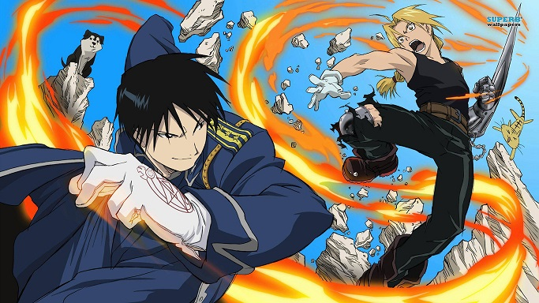

Fullmetal Alchemist (鋼の錬金術師, Hagane no Renkinjutsushi?, lit. "Alquimista de Aço"), é uma série de mangá escrita e ilustrada por Hiromu Arakawa.
O mundo de Fullmetal Alchemist é baseado no período pós-Revolução Industrial europeu. Situado num universo ficcional em que
a alquimia é uma das maisavançadas técnicas científicas conhecidas pelo homem, a história centra-se nos irmãos Edward e Alphonse Elric, que querem restaurar
seus corpos após uma
desastrosa tentativa de trazer a mãe falecida de volta à vida através da alquimia

O mangá foi licenciado no Brasil pela Editora JBC em 2007, que o publicou, diferentemente da versão original, em 54 volumes. A primeira versão do anime, foi dublada pelo estúdio Álamo para a transmissão no Brasil, e em 2005 a série começou a ser exibida no Animax, terminando sua exibição em 2006, mesmo ano em que passou a ser transmitido no bloco TV Kids da Rede TV! Sua sequência foi disponibilizada no site do SIC Radical a partir de 2010, com o áudio original e legendas em português, enquanto no Brasil foi exibida pelo Sony Spin em 2011.
Edward e Alphonse Elric são dois irmãos alquimistas procurando o catalisador lendário chamado Pedra Filosofal, um objeto poderoso que lhes permite restaurar seus corpos (que foram perdidos numa tentativa de trazer sua mãe de volta à vida pelo uso da alquimia). Nascidos na aldeia de Resembool no país chamado Amestris (アメストリス, Amesutorisu?), os dois irmãos viviam na aldeia com sua mãe Trisha Elric.[1] O pai deles, Von Hohenheim, saiu de casa por razões desconhecidas, e anos mais tarde, sua mãe Trisha Elric morreu de uma doença incurável, deixando, portanto, os dois irmãos sozinhos. Após a morte de sua mãe, Edward decide ressuscitá-la através da alquimia,[2] uma ciência avançada em que os objetos podem ser criados a partir de matérias-primas.
 Inicio
Sobre
Contato
Inicio
Sobre
Contato

Edward e Alphonse Elric são dois irmãos alquimistas procurando o catalisador lendário chamado Pedra Filosofal, um objeto poderoso que lhes permite restaurar seus corpos (que foram perdidos numa tentativa de trazer sua mãe de volta à vida pelo uso da alquimia). Nascidos na aldeia de Resembool no país chamado Amestris (アメストリス, Amesutorisu?), os dois irmãos viviam na aldeia com sua mãe Trisha Elric.[1] O pai deles, Von Hohenheim, saiu de casa por razões desconhecidas, e anos mais tarde, sua mãe Trisha Elric morreu de uma doença incurável, deixando, portanto, os dois irmãos sozinhos. Após a morte de sua mãe, Edward decide ressuscitá-la através da alquimia,[2] uma ciência avançada em que os objetos podem ser criados a partir de matérias-primas. Eles pesquisaram sobre Transmutação Humana, uma técnica proibida em que se tenta criar ou modificar um ser humano. Essa tentativa, todavia, fracassou e consequentemente Edward perdeu sua perna esquerda e Alphonse seu corpo inteiro. Numa tentativa desesperada de salvar seu irmão, Edward sacrifica seu braço direito para unir a alma de Alphonse a uma armadura.[3] Alguns dias depois, um alquimista chamado Roy Mustang visita os irmãos Elric e propõe que Edward se torne um membro do Estado Militar de Amestris em troca de mais materiais de pesquisa para que eles possam encontrar uma maneira de recuperar seus corpos. Após isso, a perna esquerda e o braço direito de Edward são substituídos por um tipo avançado de prótese chamada de automail, construídas por sua amiga Winry Rockbell e sua avó Pinako.[2]